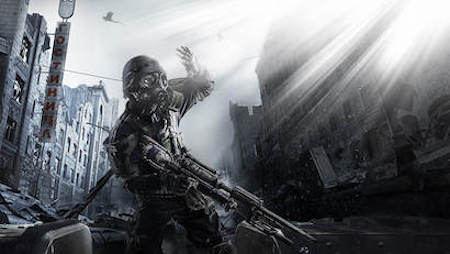
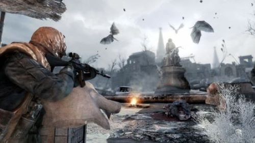

Metro 2033
Info
Metro 2033 is a 2010 first-person shooter video game developed by 4A Games and published by THQ. The story is based on Dmitry Glukhovsky's novel of the same name, where survivors of a nuclear war have taken refuge in the Metro tunnels of Moscow. Players control Artyom, a man who must save his home station from the dangers lurking within the Metro. In the game, players encounter human and mutant enemies, who can be killed with a variety of firearms. Players must also wear a gas mask to explore areas covered in fallout radiation, both underground and on the surface.
Gameplay
The game play of Metro 2033 could be whatever the player is wanting. They game offers both stealth or loud. Gameplay is perfect for whatever way anybody wants to take it. The world is unique because as you go through the game you go from being in the Russian Metro system to going on the surface. The surface is a dangerous place because it is poisonous to humans so as the player you have to stock up on Gas masks and filters. There is a wide variety of weapons ranging from silent to loud, small to large, and each has different ammo types you must keep track of. Some equipment you get for survival is knives, binoculars, maps, lighters, armor and more. Some of this equipment can be found or bought at shops in the Metro. The gameplay makes it easy for anyone to learn and pick up. The campaign takes about 9 hours to beat and several missions. The Story is great and easy to keep track of and you meet some dynamic characters and even learn more about yourself.
Personal Opinion
Metro 2033 is my all-time favorite game. Between the atmosphere, characters, combat, style, monsters, and plot the game has plenty to offer. The story is straight from the book “Metro 2033” by Dmitry Glukhovsky. To be in the shoes of the protagonist, Artyom Chyornyj, is something very special. Let’s begin with the atmosphere of the game. Throughout the game you go through many distinct and creative levels. The Russian Metro system, ruins of a library, sewers, and even scaling a radio tower creates a unique and hostile setting to be put into. This depth of creativity of the levels makes it so that each level has something different and unique from the others, but to go through all these dangerous places, weapons become a necessity for Artyom. The combat of Metro 2033 is something I have not seen in any other game. What makes it unique is the weapons themselves. They all have this very rustic look to them, and that style corresponds with the game itself. The weapons of the Metro are all Hand-Made and traded with other stations, you can see this by how the weapons break when you use them too much or when they jam when fired for too long. It makes the game more realistic. Combat can be taken two ways in every level; You could go the quiet route and sneak by all the guards, or you can go the loud route and take down everyone in the place. This adds a playstyle for people who can choose how they want to go about the game. The last thing I want to talk about is the story of Metro 2033. The plot of the game is that you are protecting the metro stations from dangerous creatures called the “Dark Ones” who corrupt people's minds and make them go mad. To do this you have to go to the nest, where the dark ones are and take it out. Throughout the story you meet unique characters who will help you along the way and in the final battle. While going through the story you realize that the metro is very much alive and breathing. Surreal things in Metro begin to happen. You see ghosts in areas of the metro nobody goes to as well as the ominous feeling of the abandoned area itself. Large balls of electricity called anomaly's swarm the metro and locations where you can see Artyom’s past, doing all this adds mystery. You must piece together the hints the game is throwing at you. The story is what ties everything together and what makes Metro 2033 such a fantastic game.
Metro 2033 Trailer
Reviews and Purchase Info
Metacritic- 81/100
IGN-6.9/10
Destructoid-8/10
The original Metro:2033 can be bought on last generation consoles like the Xbox 360 and PlayStation 3 for $19.99
Metro:2033 Redux can be bought on steam for $19.99